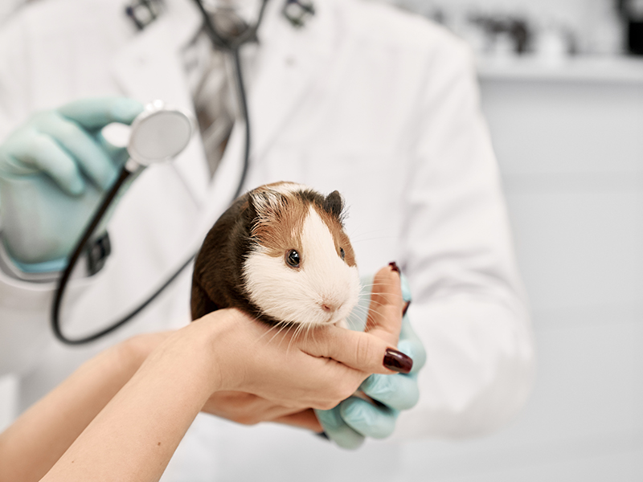
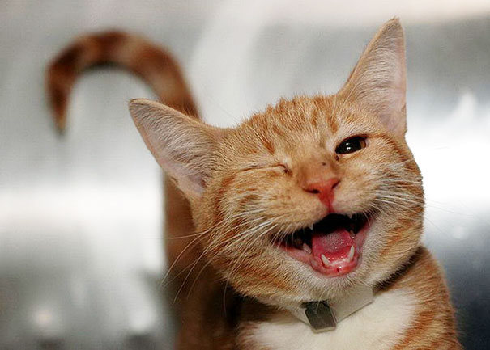

-
Consultas de pets convencionais e exóticos: Nossos veterinários experientes vão examinar seu pet com critério e cuidado.
- Exóticos somente com agendamento prévio.
-
Cirurgias: Conte com um corpo clínico experiente e tecnologias de ponta para oferecer saúde e conforto para o seu pet.
-
Vacinas Importadas: Vacinas de extrema qualidade para imunizar seu animal de estimação.
-
Internamento: Conforto para o seu pet e comodidade para você, tutor.
-
Raio X Digital: Tecnologia de ponta para auxiliar no diagnóstico do seu pet.

Benefícios por escolher a Nossa Clínica Veterinária
- Atendimento especializado e de qualidade para pets convencionais e exóticos.
- Equipe experiente e dedicada para cuidar da saúde e do bem-estar do seu animal de estimação.
- Ampla gama de serviços oferecidos, desde consultas até cirurgias e internamento.
- Utilização de tecnologias de ponta, como raio X digital, para diagnósticos precisos.
- Vacinas importadas de alta qualidade para garantir a imunização completa do seu pet.
- Ambiente acolhedor e familiar, proporcionando conforto não só para os pets, mas também para seus tutores.
- Horários flexíveis de atendimento, incluindo finais de semana.
- Compromisso com a excelência e a satisfação dos clientes.
